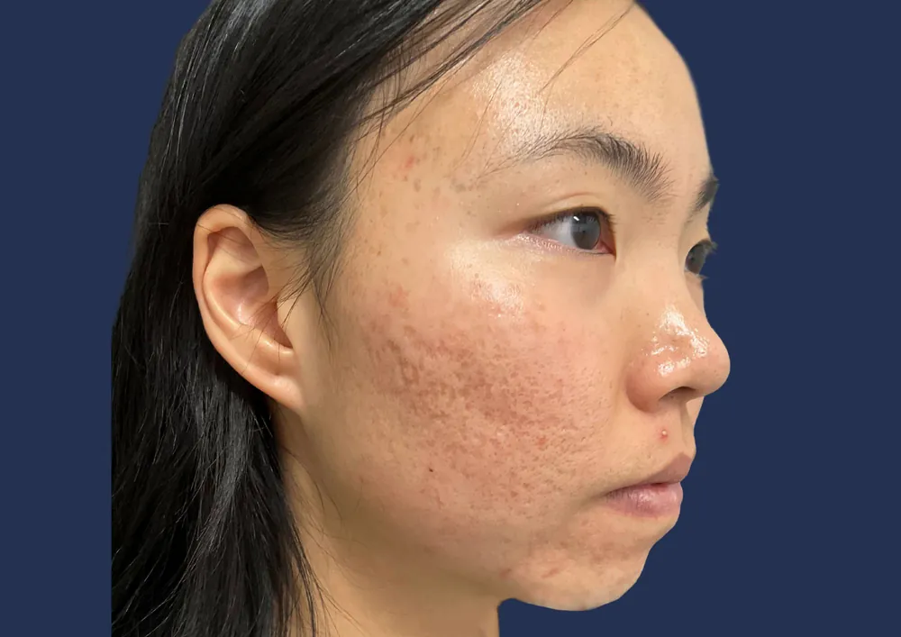
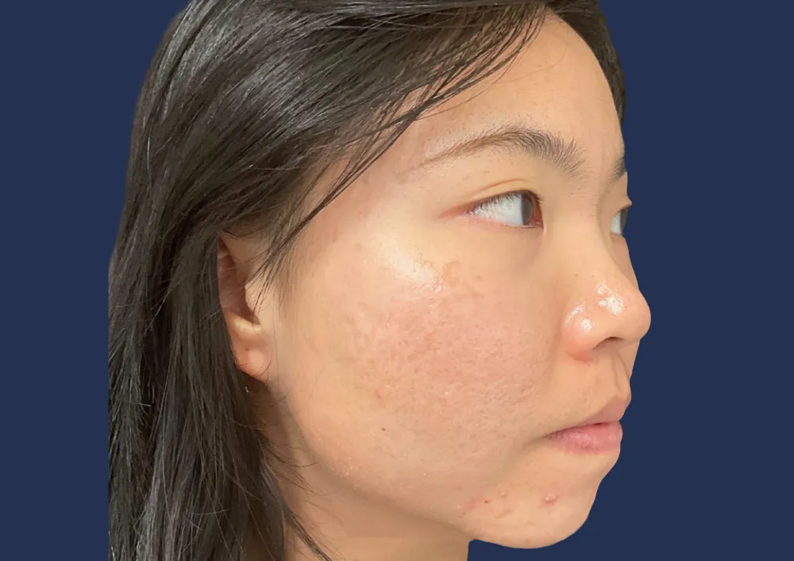

Some things are worth holding on to.The way you see yourself is one of them.
There's something about looking in the mirror and noticing little changes. Maybe your cheeks aren't quite as full. Maybe your face looks a little more tired than you feel. Nothing dramatic. Just subtle changes that add up over time.
And while we spend so much time talking about our skin, sometimes what's changed isn't the skin at all. It's what's beneath it.
- Facial hollowing after weight loss, especially with GLP-1
- Under-eyes, temples, and midface
- Hands that read older than the face


Before AfterBased on Danilkovitch et al., 2026 and Chernoff, 2026.
The layer under everything
There's more to fat than losing it.
Fat plays an important role in giving our faces their natural contours, softness, and fullness.
Age and weight loss
take that layer first.
As we age and lose facial fat, we can begin to look tired or older than we feel. Over time, whether through aging, weight loss, or other factors, these fat pads can diminish or shift, changing the contours we've come to recognize as our own.
Preserving what makes fat, fat.
Donated fat arrives with blood cells and immune cells that would be rejected. Washing and processing remove them. The fat cells stay intact, so what triggers inflammation stays locked inside them.
Placed where it was lost.
Through a cannula, into the layer beneath the skin. The tissue goes in as real structure, cell by cell, exactly where the layer thinned.
Volume, right away.
The layer refills behind the cannula, and the skin above has something to rest on again.
Then your body takes over.
The body's own cells and new blood vessels move in and gradually replace the donor tissue with tissue that is theirs. The initial fullness settles into a natural contour.
Fat's making a face-first impression.A new option for facial rejuvenation and the smaller details.
Whether it's aging, weight loss, or simply the passage of time, losing facial fat can change the way we look. But that doesn't mean those changes have to be permanent.
Lipoderma offers a different approach to natural-looking rejuvenation, helping restore lost fat in the areas where you miss it most. From hollow cheeks and temples to delicate areas around the eyes, it's an opportunity to bring back some of what time has taken away.
Restore what's yours.™
Fat has a glow-up era, too.What to expect with Lipoderma
Lipoderma provides immediate volume, but the journey doesn't stop there. As the implanted tissue remodels, results continue to evolve over time.
Some patients may notice a temporary softening in fullness as the implanted tissue gradually remodels and is replaced by their own tissue. Over time, this natural process contributes to the evolving appearance of the restored area.
Think of the first 3–6 months as your fat's glow-up era. Your results are still evolving, and your provider may recommend a touch-up during this time to help optimize fullness and contours.
Before you fill. Let's talk fat.
| Traditional aesthetic products | Fat-based restoration | ||||
|---|---|---|---|---|---|
| HA fillers | Biostimulators Sculptra / Radiesse | Autologous fat transfer | Renuva | ||
| What's it made of? | Hyaluronic acid gel | PLLA or calcium hydroxylapatite (CaHA) | Patient’s own fat, about 90% adipocytes / 10% ECM | Donated adipose-derived matrix, 100% ECM | Donated human adipose tissue, about 90% adipocytes / 10% ECM |
| How does it work? | Adds gel-based volume | Stimulates the body’s natural collagen production over time | Transfers the patient’s own fat to restore volume | Provides a matrix that supports tissue remodeling | Replaces fat with fat, followed by gradual tissue remodeling and host tissue replacement |
| When will I see results? | Immediate | Gradual, over several weeks to months as collagen production increases | Immediate volume, with results evolving over several months | Gradual, over several months | Immediate volume, with results evolving over several months |
| How long does it last? | Typically 6–18 months | Typically 12–24 months, depending on product | Potentially long-lasting, depending on fat survival | Up to 12–24 months anticipated | Up to 12–24 months anticipated; longer-term outcomes still being monitored |
| Will I need more than one session? | Maintenance treatments are common | May require a series or maintenance | Additional fat transfer may be needed | Additional treatment may be recommended | Reassessment at 3–6 months; touch-up may be recommended |
| Does it require liposuction? | No | No | Yes | No | No |
Fat looks good on you.